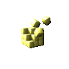
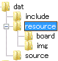

さて、リソースをロードします。
リソースとは素材という意味で、ここでは主に画像のことを指します。
下の画像ファイルをダウンロードしてresourceフォルダ以下を次のように構成してください。
画像ファイル::ダウンロード

ディレクトリ構成::

boardフォルダ内には背景ボード画像が、
imgフォルダ内には各ブロック画像と数字の画像が入っています。
これを初期化関数内で読みこんで描画します。
GV.h内でイメージハンドルをnamespaceをIMGとして定義・宣言します。
そして、ini.cppに初期化関数を書きます。
//GV.h
#ifdef FIRST_LOADING
#define E
#else
#define E extern
#endif
//コンフィグクラス
E Config config;
//画像イメージ
namespace IMG{
E int board[3];//背景画像
E int block[7];//ブロック画像
E int num[10]; //数字画像
};
//ini.cpp
#include "../include/main.h"
//画像イメージのネームスペースを使用する
using namespace IMG;
//初期化処理
void ini(){
//背景ボード画像のロード
board[0]=LoadGraph("./dat/resource/board/board.png");
board[1]=LoadGraph("./dat/resource/board/level.png");
board[2]=LoadGraph("./dat/resource/board/vertical.png");
//ブロック画像のロード
LoadDivGraph("./dat/resource/img/block.png",7,7,1,16,16,block);
//数字画像のロード
LoadDivGraph("./dat/resource/img/num.png",10,10,1,12,16,num);
}
//func.h
・
・
・
//ini.cpp//
//初期化処理
void ini();
//main.cpp
・
・
・
//メイン関数
int WINAPI WinMain( HINSTANCE hInstance, HINSTANCE hPrevInstance,LPSTR lpCmdLine, int nCmdShow ){
ChangeWindowMode(TRUE);//ウィンドウモード
if(DxLib_Init()==-1 || SetDrawScreen( DX_SCREEN_BACK )!=0) return -1;//初期化と裏画面化
ini();
while(ProcessLoop()){
fps();
ScreenFlip();
}
DxLib_End();
return 0;
}
初期化処理なので、メインループに入る前にini()を呼び出します。
後でブロックの大きさや、色の種類を#defineで定義しますが(後回し多いなー)
これで画像が読み込まれたはずです。
LoadGraph(),LoadDivGraph()の戻り値が-1ならば、読み込みに失敗しています。
そのときは、パスが間違っている可能性が高いです。
DXライブラリのリファレンスも参照してください。
次回はこの読み込んだ画像を描画します。